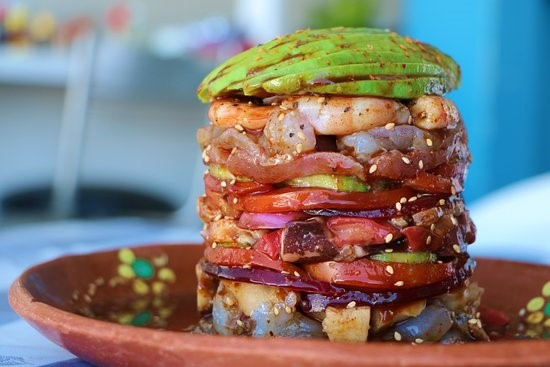

ingredientes:
500 g de camarón entero pelado y cocido
800 g de pulpo mediano cocido y troceado
1 aguacate cortado en rebanadas delgadas
100 g de cebolla cortada en rebanadas muy finas
150 g de pepino cortado en cubos
120 ml de salsa petróleo
duración aprx: 30min cantidad: 2 porciones
Preparacion:
Acomodar el aro en un plato y el plástico que rodeará las paredes del mismo para dar altura a la torre.
Poner una capa de aguacate, enseguida una de pulpo, luego una de cebolla y al final una de camarón.
Continuar haciendo capas hasta crear la torre de la altura deseada.
Cuidar que el plástico le dé estabilidad y forma a la torre, compactando bien los ingredientes.
Agregar la salsa petróleo bañando muy bien los ingredientes.
Retirar el plástico y el aro cuidadosamente y decorar con más aguacate.